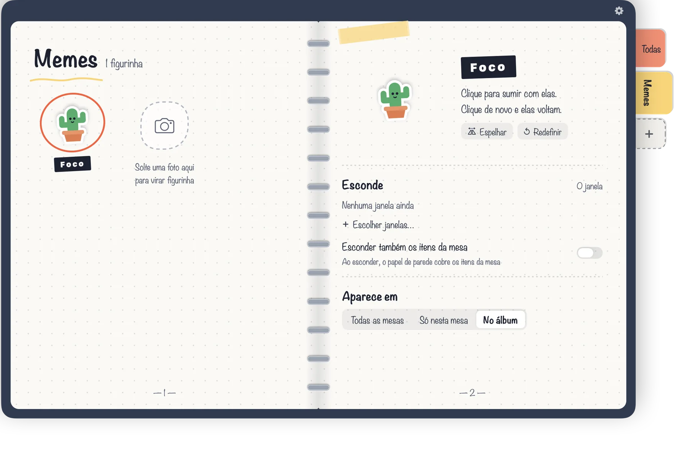

Um álbum de figurinhas para a mesa do seu Mac
Um clique na figurinha. E as janelas somem.
Cole o Shoo na sua mesa e diga de quais apps ou janelas ele cuida. Um clique e tudo some; outro clique e tudo volta exatamente para o lugar.
Baixar na Mac App Store

Cada figurinha cuida de uma parte desta página. Clique em uma.
Um clique. Mesa limpa.
Experimente: escolha um momento e clique no diabinho.
Do seu jeito
Transforme qualquer foto em figurinha — seu cachorro, seus amigos, seu meme favorito — e dê a cada uma a sua função.

Arraste uma foto para o álbumou só clique nela
- Solte uma foto e o Shoo recorta no seu Mac
- Organize as figurinhas em abas e cores suas
- Cada figurinha esconde o seu próprio grupo de janelas
Veja de relance de quais janelas cada figurinha cuida
Quando uma janela vinculada a uma figurinha vem para a frente, o Shoo cola uma fita washi no canto superior esquerdo, num tom que combina com a figurinha. Experimente os estilos.

Fita washi: incluída de graça. Dá para desligar em “Marcas nas janelas”, nos ajustes.
Como funciona
Três passos, sem telas de configuração.
Descole uma figurinha
Arraste uma figurinha para fora do álbum e solte onde quiser na mesa.
Aponte as janelas
Escolha “Escolher janelas…” e clique nas janelas ou apps de que essa figurinha vai cuidar.
Clique. Xô!
Clique na figurinha para esconder tudo. Clique de novo e tudo volta.
Pequenos detalhes que fazem diferença
Tudo acontece no seu Mac, dentro do álbum.
- Uma janela ou o app inteiroSafari, Chrome e Notas podem esconder uma janela só; os outros apps são ocultados inteiros.
- Esconda também a mesaEnquanto uma figurinha está ativa, o seu papel de parede cobre os arquivos da mesa.
- Todas as mesas ou só estaColoque uma figurinha em todas as mesas ou deixe em uma só.
- Edite no próprio álbumRenomeie, redimensione, gire e espelhe as figurinhas ali mesmo.
- Sem atrapalharMostre o Shoo no Dock, na barra de menus ou em lugar nenhum. Ative “Abrir ao iniciar sessão” e ele já está lá quando o Mac liga.
- Onze idiomasEnglish, Español, Deutsch, Français, Português, Tiếng Việt, 繁體中文, 简体中文, 日本語, 한국어, ไทย.
Comece de graça
O diabinho é seu de graça, com todos os recursos. O resto você desbloqueia uma vez só, sem assinatura.
Grátis
O diabinho vermelho
- Todos os recursos em uma figurinha
- Esconda janelas, apps e a mesa
- Todos os idiomas
- Marcas nas janelas com fita washi
 Desbloquear tudo
Desbloquear tudo
Compra única
- Mais 5 figurinhas desenhadas à mão
- Figurinhas feitas com as suas fotos
- Suas próprias abas e cores
- Quantas figurinhas você quiser
- Mais 3 estilos de marca nas janelas: minifigurinha, costura e brilho

A sua mesa continua sendo sua
- Sem conta, sem anúncios, sem rastreamento
- Figurinhas e ajustes ficam no seu Mac
- O recorte das fotos é feito no seu Mac; nada é enviado
- O Shoo só esconde e mostra as janelas que você escolheu; nunca lê o que há nelas
Perguntas
Por que o macOS pede para deixar o Shoo controlar o Safari, o Chrome ou o Notas?
É assim que o Shoo esconde uma janela só desses apps. O Shoo apenas pede ao app que esconda ou mostre a janela que você escolheu. Se você recusar, o Shoo esconde o app inteiro.
Dá para esconder todas as janelas de qualquer app?
Dá. Qualquer app pode ser ocultado inteiro. Esconder uma janela só funciona com Safari, Chrome e Notas.
É assinatura?
Não. O Shoo é grátis com a figurinha do diabinho. Desbloquear tudo é uma compra única.